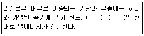

전자부품장착기능사 (2009-07-12 기출문제)
1과목: SMT 개론
1. 비전 검사장비(AOI : Automated Optical Inspector)에 불량 판정 기준에 대한 설명으로 옳은 것은?
- Vision 카메라에 검사하고자 하는 부품의 Image를 manual(수동)로 판단하여 양품과 불량을 판정한다.
- Vision 카메라에 의해서 인식되는 실제의 부품 화상을 눈으로 보고 양품과 불량을 판정한다.
- 검사하고자 하는 부품의 Image 와 Memory에 저장된 Sample Image를 비교 검사하여 양품과 불량을 판정한다.
- 동종 부품의 미세 형태변화 및 숙련자에 의한 부품 크기조정, Light 조건 조정 등 미세조정 할 필요가 없다.
(정답률: 75%)

2. IPC-CM-770 "Printed Board Component Mounting"에서 대표적인 실장형태를 조립 타입(type)과 클래스(class)로 구분하여 설명한 것 중 틀린 것은?
- Type 1: 기판의 단면에 부품장착, Class A: 표면실장 부품만 장착
- Type 2: 기판의 양면에 부품장착, Class B: 표면실장 부품만 장착
- Type 1: 기판의 단면에 부품장착, Class C: 삽입실장 부품과 표면실장 부품이 혼재 장착
- Type 2: 기판의 양면에 부품장착, Class C: 삽입실장 부품과 표면실장 부품이 혼재 장착
(정답률: 67%)
3. 표준 마운터(또는 고속마운터)의 구성요소가 아닌 것은?
- 부품 장착용 헤드
- 부품 픽업 노즐의 세척장치
- 부품 픽업용 사이즈 별 노즐
- 부품 공급 장치 피더(또는 Cassette)
(정답률: 78%)
4. 표면실장용 부품 사용이 점차 확대된 이유로 틀린 것은?
- 표면실장용 부품이 점차 이형화가 되었다.
- 표면실장기술과 장비의 성능이 발전되어 생산성이 향상되었다.
- 생산제품이 성능과 가치를 높일 수 있다.
- 생산제품의 성능과 가치를 높일 수 있었다.
(정답률: 74%)
5. 스크린 프린터에서 사용하는 스퀴지 중에서 마스크에 공급하는 크림 솔더량을 많게 할 수 있고, 스퀴지 탄성에 의한 인(쇄)압 조정이 용이한 스퀴지 종류는?
- 평 스퀴지
- 검 스퀴지
- 각 스퀴지
- 라운드 스퀴지
(정답률: 85%)
6. 다음 중 비파괴검사 방법이 아닌 것은?
- 외관검사
- X-ray 검사
- 초음파 검사
- 단면 조직검사
(정답률: 73%)
7. 다음 중 SMT In-line 설비가 아닌 것은?
- 칩 마운터
- 스크린프린터
- 솔더 크림
- 디스펜서
(정답률: 65%)
8. 다음 중 칩 본드의 선택기준이 아닌 것은?
- 도포 성능이 좋을 것
- 기포가 없을 것
- 경화시간이 길 것
- 납땜 온도에 충분히 강도를 가질 것
(정답률: 82%)
9. 솔더 페이스트 인쇄 작업 시 지켜야 할 사항에 대한 설명이 틀린 것은?
- 냉장고에서 꺼낸 솔더 페이스트는 뚜껑을 개봉하지 않고 라인의 실내온도와 일치하는 시간까지 상온 방치한다.
- 생산해야 할 기판의 인쇄할 면과 메탈마스크가 맞는지 확인한다.
- 실내 환경에 적응하도록 항상 스크린프린터 커버를 오픈시켜 놓고 작업해야 한다.
- 주기적으로 메탈마스크 위의 납량을 확인하여 보충해 주어야하며 스퀴지 양쪽으로 밀려난 솔더 페이스트를 안쪽으로 밀어 넣는다.
(정답률: 80%)
10. 칩 부품의 흡착불량과 거리가 먼 것은?
- 노즐 형상, 상태
- 부품 피더 정도
- 노즐 흡착력
- 장착 높이
(정답률: 68%)
11. 다음 중 실장 형태에 대한 설명 중 틀린 것은?
- IMT는 인쇄회로 기판의 스루홀에 부품 리드를 삽입 납땜 하는 형태이다.
- IMT는 주로 단면실장의 형태이다.
- IMT는 SMT가 발전한 기술이다.
- SMT는 양면실장이 가능한 형태이다.
(정답률: 85%)
12. 소형부품에서 많이 발생되며 리플로우 공정에서 부품의 한쪽 전극이 일어서는 현상은?
- 역삽
- 맨하탄
- 크랙
- 과납
(정답률: 86%)
13. 다음 중에서 플럭스의 역할이 아닌 것은?
- 모재 금속 청정화
- 재산화 방지
- 솔더와 모재의 젖음성을 촉진
- 산화막 형성
(정답률: 56%)
14. 칩 부품에 따라 노즐 사이즈와 토출 시간, 온도, 압력을 변화시켜 접착제를 도포하는 방식은?
- 핀 전사방식
- 스크린 인쇄방식
- 디스펜서 방식
- 메쉬(Mesh) 인쇄방식
(정답률: 70%)
15. 플럭스(Flux)가 구비해야 할 조건으로 틀린 것은?
- 모재 금속과 솔더의 표면 산화막이 제거될 것
- 모재에 대한 플럭스 자신의 젖음성과 유동성이 좋을 것
- 플럭스 잔사 제거가 쉬울 것
- 플럭스 반응이 빠르고 솔더보다 융점이 높을 것
(정답률: 65%)
16. 리플로우(Reflow) 가열방식 중 표면실장용으로 잘 사용하지 않는 방식은?
- 적외선(IR) 가열방식
- 열풍(Hot Air) 가열방식
- 적외선(IR)+열풍(Hot Air) 가열방식
- 증기(VPS) 가열방식
(정답률: 83%)
17. PCB(land)에 크림 솔더 인쇄 후 부품을 장착하여 납땜하는 가열 장비는?
- 스크린 프린터
- 리플로우 솔더링 장비
- 칩 마운터
- 웨이브 솔더링 장비
(정답률: 67%)
18. 표면실장기술(SMT)에 대한 장점으로 옳은 것은?
- 제품의 소형화, 고밀도화가 가능하다.
- 공정이 복잡하다.
- 설비가 고가이다.
- 수리가 어렵다.
(정답률: 85%)
19. 솔더 페이스트(Solder Paste)에 의한 불량 요인이 아닌것은?
- 고드름(사슴뿔) 현상
- 브릿지(Short) 현상
- 부품의 뒤집힘 현상
- 일어섬(Manhatan) 현상
(정답률: 67%)
20. 리플로우의 특징을 설명한 것으로 틀린 것은?
- 부품의 열 충격이 크다.
- 솔더(Solder)를 적정량 공급할 수 있다
- 자기보정 효과가 있다.
- 솔더(Solder)의 불순물 혼입이 많다.
(정답률: 76%)
2과목: 전자기초
21. 온도 프로파일을 설정할 때 고려해야 하는 항목과 관계가 먼 것은?
- 인쇄회로기판 종류
- 부품 특성
- 세척제
- 솔더 페이스트 조성
(정답률: 82%)
22. SMT 부품 실장 시 PCB Size 오차에 의한 불량을 해결하기 위해 PCB 상하단에 만든[PCB 제작시] 특정 Mark를 표시한 것을 무엇이라 하는가?
- Clamp Mark
- Side Mark
- Pattern Mark
- Fiducial Mark
(정답률: 82%)
23. 표면실장 장치에서 기판의 정확한 위치를 파악하기 위한 인식 표시로 사용하고 있는 것은?
- 기판 랜드
- 기판 패턴
- 기판 홀
- 기판 마크
(정답률: 79%)
24. 실장 공정에서 비전(Vision)을 이용하여 검사하는 방법이 아닌 것은?
- 부품 성능의 검사
- 납땜 상태의 검사
- 인쇄 상태의 검사
- 장착 상태의 검사
(정답률: 55%)
25. 크림 솔더(Cream Solder)의 인쇄불량 요인이 아닌 것은?
- 예열
- 마스크 클리어런스(Mask Clearance)
- 스퀴지(Squeeze) 속도
- 판분리 속도
(정답률: 80%)
26. 표준 마운트에서 장착 불량의 유형이 아닌 것은?
- Feeder의 Setting이 맞지 않을 경우
- 두께가 얇은 PCB의 Backup Pin의 Setting이 맞지 않을 경우
- 부품 크기에 맞는 노즐 선택의 오류 및 노즐이 맞지 않을 경우
- PCB의 로딩(loading) 이송속도를 빠르게 할 경우
(정답률: 65%)
27. SMT 공정 작업에서 부품에 따른 노즐 변경 시 자동적으로 노즐을 분리하거나 부착시켜주는 기능을 수행하는 모듈을 무엇이라 하는가?
- Moving Camera Module
- Fix Camera Module
- Auto Nozzle Changer Module
- Fiducial Module
(정답률: 79%)
28. 납땜할 필요가 없는 곳에 도포하여 땜납에 젖지 않도록 하는 것은?
- 랜드(Land)
- 비아홀(Via Hole)
- 패드(Pad)
- 솔더레지스트(Solder Resist)
(정답률: 68%)
29. 솔더링(Soldering) 불량을 줄이기 위한 솔더 크림 관리기준에 대해 서술한 것 중 틀린 것은?
- 제조일로부터 3~6개월 이내의 생산 제품을 사용한다.
- 5~10℃ 유지가 가능한 냉장 보관한다.
- 선입선출에 원칙에 따라 반드시 입고된 순서대로 사용한다.
- 상온(25℃)에서 수분흡수를 촉진하기 위해 10분 이내 개봉한다.
(정답률: 75%)
30. 실장 공정 환경 중 습도관리 조건으로 가장 알맞은 것은?
- 20 ~ 40%
- 40 ~ 60%
- 60 ~ 80%
- 80 ~ 100%
(정답률: 70%)
31. 다음 중 리플로우 솔더링 기계에 대한 설명으로 잘못된 것은?
- 솔더 크림 인쇄 후 부품이 실장 된 PCB에 열을 가해 납땜 작업을 위한 설비이다.
- 방식으로는 대류(열풍), 적외선, 대류+적외선, VPS 등이 있다.
- 남땜부 기판 온도는 최대 250℃ 이하로 한다.
- Flux 도포방식에는 발포식, Wave식, Spray식 등이 있다.
(정답률: 77%)
32. 일반적으로 사용되는 솔더 크림의 합금으로 옳은 것은?
- Sn + Pb + Ag
- Sn + Pb + Au + Bi
- Sn + Pb + Au + Bi + Cd
- Sn + Pb + Zn
(정답률: 87%)
33. 칩 부품 실장 시 틀어짐이 발생하였다. 그 해결 방법으로 틀린 것은?
- 장착 높이 재설정
- 부품 높이 재설정
- 장착 시 지연 시간 재설정
- 부품 인식 높이 재설정
(정답률: 75%)
34. 다음 중 괄호 안에 들어갈 알맞은 용어로 조합된 것은?

- 대류, 복사
- 대류, 반사
- 반사, 집광
- 복사, 집광
(정답률: 89%)
35. 표면 실장 표준 MOUNTER 설비에서 작업 가능한 기판치수로 적합한 것은?
- 최소 : 10mm×10mm, 최대 : 100mm×100mm
- 최소 : 20mm×20mm, 최대 : 200mm×200mm
- 최소 : 30mm×30mm, 최대 : 300mm×300mm
- 최소 : 50mm×50mm, 최대 : 330mm×250mm
(정답률: 75%)
36. 제어회로구성에서 트랜지스터(TR)의 주요 기능 2가지는?
- 증폭기능, 스위칭기능
- 스위칭기능, 발진기능
- 증폭기능, 발진기능
- 점멸기능, 스위칭기능
(정답률: 82%)
37. 납땜이 금속에 잘 부착되도록 화확적으로 활성화시키는 물질로 맞는 것은?
- 포토비아
- 폴리이미드
- 플럭스
- 아라미드
(정답률: 86%)
38. 많은 전자회로소자가 하나의 기판 위 또는 기판 자체의 분리가 불가능한 상태로 결합되어 있는 초소형 구조의 기능적인 복합적 전자부품은?
- 콘덴서
- 집적회로
- 다이오드
- 트랜지스터
(정답률: 75%)
39. 2개의 SCR을 역 병렬로 접속한 3단자의 교류 스위치로서 양 방향성 소자이며, 교류 전력 제어에서 무접점 스위치 소자로 주로 사용되는 것은?
- TRIAC
- GTO
- SCS
- UJT
(정답률: 77%)
40. 전자 하나가 1V의 전위차를 거슬러 올라갈 때 필요한 일에 해당하는 것은?
- 1 [V]
- 1 [J]
- 1 [eV]
- 1 [A]
(정답률: 75%)
3과목: 공압기초
41. 이상적인 연산 증폭기(OP Amp, operational amplifier)가 갖추어야 할 조건 중 옳지 않은 것은?
- 주파수 대역폭이 무한대일 것
- 입력 임피던스가 무한대일 것
- 오픈 루프 전압 이득이 무한대일 것
- 오프셋 전압이 1 이어야 할 것
(정답률: 70%)
42. 코일에 전류를 흘리면 자석이 되는 성질을 이용한 것으로 전자석으로 되었을 때 철판을 끌어당겨, 그 철판에 붙어있는 스위치 부의 접점을 닫거나 여는 것은?
- 릴레이
- 저항
- 콘덴서
- 스피커
(정답률: 68%)
43. PCB로 구현하기 위한 기구 설계 단계에 해당하지 않는 것은?
- 케이스 디자인
- PCB의 크기 결정
- 부품의 조립방법 결정
- 부품간의 배선패턴 설계
(정답률: 67%)
44. PN 접합 다이오드 반도체 소자의 순방향 바이어스에 의한 캐리어의 이동으로 인한 전류는?
- 확산 전류
- 이차전자 방출전류
- 이온전류
- 드리프트 전류
(정답률: 62%)
45. 2층 이상의 PCB에서 층간을 접속하기 위하여 기판에 홀을 가공한 후 그 내부를 도금한 것으로 부품이 삽입되지 않는 홀(Hole)을 무엇이라 하는가?
- 부품 홀
- 블로우 홀
- 비아 홀
- 버
(정답률: 78%)
46. 회로시험기를 사용하여 측정할 수 없는 항목은?
- 직류전압
- 직류전류
- 위상차
- 저항
(정답률: 66%)
47. PCB의 가공이 완료된 시점에서 PCB 상의 모든 랜드에 검사용 핀 혹은 프로브를 접촉시켜 이상의 유무를 검사하는 방법을 무엇이라 하는가?
- BBT(Bare Board Test)
- 회로시험기(Circuit Test)
- 동작시험기(Function Test)
- 비아 홀 검사(Via-Hole test)
(정답률: 83%)
48. 회로의 층수에 의해서 PCB를 분류할 경우 그 종류가 아닌 것은?
- 단면 PCB
- 양면PCB
- 다층 PCB
- 플렉시블 PCB
(정답률: 84%)
49. CAD 기술에서 다루는 자동설계와 대화형 설계를 비교할 때 자동설계에 대한 설명으로 거리가 먼 것은?
- 설계 전에 작성할 데이터가 많다.
- 자동배선 기능을 이용하여 배선작업을 수행한다.
- 사전에 필요한 데이터가 준비되어 있으면 설계 후의 검사작업이 적어진다.
- 작업자에 의해 데이터 수정이 즉시 이루어진다.
(정답률: 71%)
50. 회로도 작성을 위한 CAD 프로그램 사용으로 기대되는 특징이 아닌 것은?
- 배선패턴의 미세화에 대응
- 배선패턴 변경시 데이터 활용 용이
- 단순작업에 걸리는 시간 단축 불가능
- 잘못 설계된 내용 수정이 용이
(정답률: 55%)
51. 다음 중 유압장치의 특징을 잘못 설명한 것은?
- 작동유로 인한 화재의 위험이 있다.
- 속도를 무단으로 변속할 수 있다.
- 작은 장치로 큰 힘을 얻을 수 있다.
- 특별히 냉각 장치가 필요없다.
(정답률: 62%)
52. 공기온도 31℃, 상대습도 70%, 압축기가 흡입하는 공기유량 12m3 일 때 수증기량은 약 몇 kg/m3 인가? (단 : 31℃ 에서의 포화수증기량은 0.32kg/m3 이다.)
- 0.182
- 0.224
- 1.421
- 2.673
(정답률: 63%)
53. 공압 장치의 주요 구성요소에 대한 명칭과 기능이 잘못 연결된 것은?
- 공압 발생장치 : 압축공기 생산
- 공기 청정화장치 : 압축공기의 정화
- 제어장치 : 액추에이터로 공급되는 압력 제어
- 구동장치 : 전동기나 엔진을 이용하여 공기 압축기 회전
(정답률: 57%)
54. 다음 중 압력의 단위로 접합하지 않은 것은?
- N/m2
- Pa
- J/s
- kg/m·s2
(정답률: 74%)
55. 다음 중 1 표준기압이 아닌 것은?
- 9.8 mAq
- 1.0332 kgf/cm2
- 760 mmHg
- 1 atm
(정답률: 51%)
56. 공압의 특성에 대한 설명 중 틀린 것은?
- 힘의 증폭이 용이하다.
- 제어가 간단하다.
- 신호의 응답속도가 늦다.
- 인화 위험이 있다.
(정답률: 55%)
57. 방향 제어 벨브의 구조 중에서 스풀형에 대한 장점으로 옳은 것은?
- 이물질이 혼입되어도 고장이 적다.
- 압력이 축 방향으로 작용하여 작은 힘으로 밸브 전환이 가능하다.
- 정밀도에 관계없이 밀봉효과가 아주 좋다.
- 급유가 필요 없다.
(정답률: 63%)
58. 피스톤의 면적이 8cm2인 실린더에 100kgf의 힘을 가할 때, 이 실린더에 작용하는 압력은 약 몇 kgf/cm2인가?
- 0.125
- 1.25
- 12.5
- 125
(정답률: 56%)
59. 다음중 밸브의 작동 방법에서 수동 작동 방법을 표시한 것으로 틀린 것은?
- 누름 스위치
- 레버
- 페달
- 방향성 롤러 레버
(정답률: 60%)
60. 압축 공기를 생산하기 위해서는 공기 압축기나 송출기가 필요한데 일반적으로 송출 압력이 얼마 이상이면 압축기라 하는가?
- 1 kgf/cm2
- 1.5 kgf/cm2
- 2 kgf/cm2
- 2.5 kgf/cm2
(정답률: 49%)